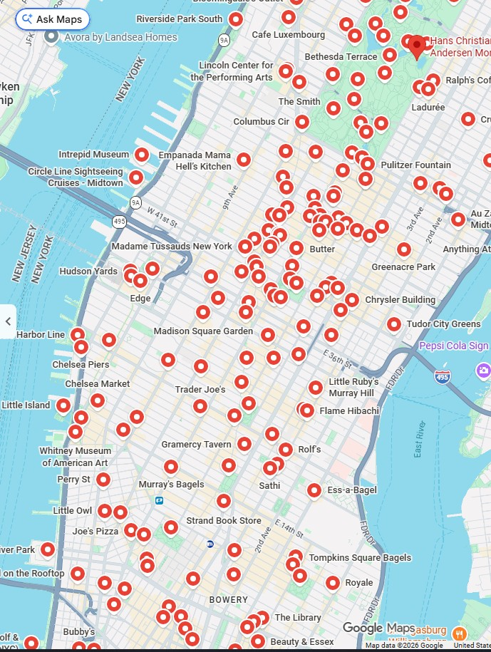
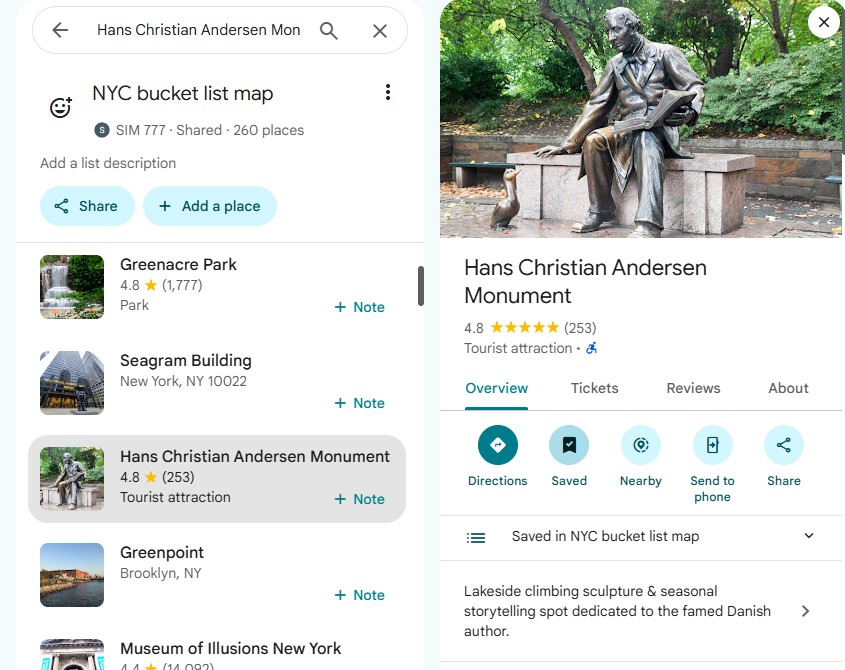
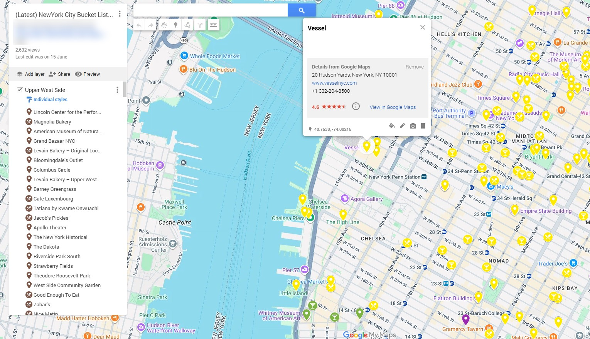

The NYC Bucket List Map
Every pin is a place I'd send a friend: landmarks, food worth the trip and viewpoints most visitors miss. Plan your days on your laptop before you fly, then explore from your phone once you land.

See it in action

The map lives in your saved lists in Google Maps. Scroll through every place with photos, ratings and what kind of spot it is, or search for one by name.
Every place shows up as a red pin right on your normal map. Just finished at Central Park? Look around and you'll spot Bethesda Terrace, a bakery for lunch and a viewpoint for sunset, all within walking distance.
No more “where should we go next?” on the sidewalk. The answer is already pinned.
The planning version groups places by neighborhood, like Upper West Side, so you can build each day around one area. Pins are color-coded by category, and clicking one shows the address, website, phone number and rating.

Get started
Pay $5 once. You instantly get a PDF with your access links and a short guide to getting started.
Tap the Google Maps link in the PDF. The map opens in your Google Maps app. Save it and it stays in your saved lists.
Out in the city? Tap a pin and go. Still at home? Open the My Maps link on your laptop and plan your days.
When to use it
Before your trip
On your laptop · Google My Maps
During your trip
On your phone · Google Maps app
From verified buyers
Awesome!
“Exactly what I need for our upcoming trip! So glad I found this. Includes a list as well as easy directions for how to get it to open in your Google Maps app.”
NY map
“I love that I have the map to hand on my phone.”
Great memories
“I visited New York last fall and plan to go again next year. So far, the map has been easy to navigate.”
Great resource
“Have yet to use but have found it useful in planning.”
Get the map
The NYC Bucket List Map
Google Maps + Google My Maps access
$5one-time payment
Secure checkout via Payhip
No new app. The map opens in Google Maps, which is free on the App Store and Google Play if you don't have it already.
Once you've saved it, it sits with your saved lists in Google Maps. The pins also show up on your normal map whenever you're browsing the city.
Yes. With the Google My Maps version you can make your own copy, add your hotel, remove places and build your own itinerary.
Yes, automatically. When I add or change places, your map updates. You pay once and never need to do anything.
Yes, anywhere you can use Google Maps.
250+ places I'd send a friend to, waiting in the app you already use.
Get instant access — $5